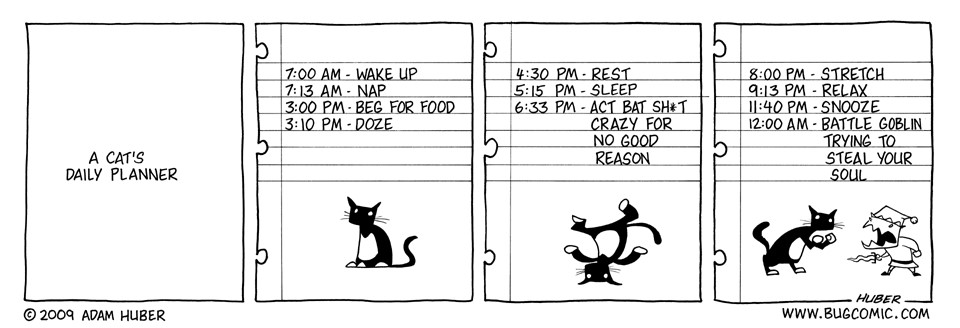

for loops
Contents
for loops#
In the previous section we introduced lists in Python, one form of a collection of values that can be represented by a single variable. In this lesson we will learn how to use loops. Loops allow parts of code to be repeated some number of times, such as iterating over all of the items in a Python list and performing a calculation on each item.
A (bad) example#
Let’s consider an example using the list below:
european_cities = ["Helsinki", "Paris", "Barcelona", "Uppsala"]
Suppose we want to print out the name of each city in our list. We could use the index value for each city and do the following:
european_cities[0]
european_cities[1]
european_cities[2]
european_cities[3]
But this is a bad idea. Why? Well there are two reasons. First, it does not scale nicely for long lists, and will take forever to type in. Second, it won’t work if the length of the list has fewer than 4 cities. Let’s see an example with a new list.
european_cities = ["Riga", "Rome", "Athens"]
european_cities[0]
european_cities[1]
european_cities[2]
european_cities[3]
Introducing the for loop#
We could do a much better job by using a for loop.
european_cities = ["Amsterdam", "Brussels", "Lisbon", "Reykjavik"]
for city in european_cities:
print(city)
Not only is this shorter, but it is also more flexible.
Try printing out a different list of cities such as ['Detroit', 'Chicago', 'Denver', 'Boston', 'Portland', 'San Francisco', 'Houston', 'Orlando'].
Still works, right?
us_cities = [
"Detroit",
"Chicago",
"Denver",
"Boston",
"Portland",
"San Francisco",
"Houston",
"Orlando",
]
for city in us_cities:
print(city)
for loop format#
For loops in Python have the general form below.
for variable in collection:
do things with variable
Let’s break down the code above to see some essential aspect of for loops:
The
variablecan be any name you like.The statement of the
forloop must end with a:The code that should be executed as part of the loop must be indented beneath the
forloop statement. The typical indentation is 4 spaces.There is no additional special word needed to end the loop, you simply change the indentation back to normal.
In summary, for loops are useful to repeat some part of the code a finite number of times.
Your daily for loop#

Figure 2.3. A cat’s daily routine as an example loop. Original comic from https://www.bugmartini.com/comic/cats-eye/.
Like many other programming concepts, the idea of looping through actions is something that is already perhaps more familiar to you than you think. Consider your actions during a given day. Many people have certain routines they follow each day, such as waking up, taking a shower, eating breakfast and brushing their teeth. In Python code, we might represent such actions as follows:
for day in my_life:
wake_up()
take_shower()
eat_breakfast()
brush_teeth()
...
Note that my_life would be a list of the days of your life, and the actions you take are represented as functions, such as wake_up().
Furthermore, by following this kind of list of repeating actions we’re able to start the day effectively even before the first cup of coffee :).
for loop variables#
Note that the variable used in a for loop is just a normal variable and still exists after the loop has completed with the final value given to letter. Let’s loop over a list of weather conditions and print them to the screen.
weather_conditions = [
"rain",
"sleet",
"snow",
"freezing fog",
"sunny",
"cloudy",
"ice pellets",
]
for weather in weather_conditions:
print(weather)
What is its value of weather after the for loop has completed?
print("After the loop, weather is", weather)
For loops using the range function#
A loop can be used to iterate over any list of values in Python.
So far we have considered only lists, but we could also write a loop that performs a calculation a specified number of times by using the range() function. Let’s consider an example where we use a for loop with value as the loop variable and range(5) as the collection. Let’s see what happens if we print value at each iteration.
for value in range(5):
print(value)
In this case, we use a special function called range() to give us a list of 5 numbers [0, 1, 2, 3, 4] and then we print each number in the list to the screen.
When given an integer (whole number) as an argument, range() will produce a list of numbers with a length equal to the specified number.
The list starts at 0 and ends with number - 1.
You can learn a bit more about range by typing help(range).
In [1]: help(range)
Help on class range in module builtins:
class range(object)
| range(stop) -> range object
| range(start, stop[, step]) -> range object
|
| Return an object that produces a sequence of integers from start (inclusive)
| to stop (exclusive) by step. range(i, j) produces i, i+1, i+2, ..., j-1.
... (output truncated)
Question 2.4#
The program below will print numbers to the screen using the range() function.
for i in range(...):
print(i)
Using the documentation that is produced when you run help(range), what values would you replace the ... in the parentheses of the range() function with to have the following output printed to the screen? Try to first think about the function without running any code.
2
5
8
# You can use this cell to enter your solution.
# Solution
for i in range(2, 9, 3):
print(i)
Looping over lists using index values#
Since we already know how to find the length of a list using the len() function, we can now take advantage of this knowledge to make our for loops more flexible. Let’s use the range() function to loop over a list of numbers and add the value of the loop variable i to each value. In addition, we can add a few print statements to display the values of i and numbers[i] within the loop. Let’s also check the updated values in the list after the loop.
numbers = [5, 6, 7, 8]
for i in range(len(numbers)):
print("Value of i:", i)
print("Value of numbers[i] before addition:", numbers[i])
numbers[i] = numbers[i] + i
print("Value of numbers[i] after addition:", numbers[i])
print("")
numbers
There are several important things to observe in this for loop:
Because we are using the
range()function, the value assigned to the loop variableistarts with0and increases by1each time through the loop.Value in the list
numbersat indexiincreases at each iteration.The value that changes in the list
numbersin each iteration through this for loop is the value at indexi, while the other values are not updated. This occurs because we’re assigning a new value atnumbers[i].Value of
numbers[i]on the right side of the equation is the “old” value. That “old” value is increased byifirst, and then stored as the updated valuenumbers[i].
The variable i is commonly used to denote the index variable in loops. Loops can sometimes occur with another loop (referred to as nested loops), in which case other index variables such as j or k may be used.
Why use index value to loop over a list?#
Good question. First off, if you want to update individual values in a list you’re likely going to need to loop that includes the index values. There are functions such as enumerate() that can help, but their use can be somewhat confusing for new programmers. Second, in cases where you have multiple lists that are related to one another, it can be handy to use a loop with the index values to be able to access corresponding locations in each list. For this, let’s consider an example with two lists.
cities = ["Helsinki", "Stockholm", "Oslo", "Reykjavik", "Copenhagen"]
countries = ["Finland", "Sweden", "Norway", "Iceland", "Denmark"]
As you can see we have 5 cities and 5 corresponding counties. Let’s print out each pair using a single for loop.
for i in range(len(cities)):
print(cities[i], "is the capital of", countries[i])
Cool. So as you can see, the index i is used in this case to access each item in the two lists of cities and countries and allow us to print out the city/country pairs. We’ll get more practice with this kind of thing in the exercises for this week. In the example above, we used the length of the list cities in the range() function. We could just as easily used the list countries to define the values of i since both lists are the same length.
Question 2.5#
What output would the following program produce? Try to first think about the loop without running any code.
odd_numbers = [1, 3, 5, 7, 9]
even_numbers = [10, 4, 6, 8, 2]
for i in range(len(odd_numbers)):
print(odd_numbers[i] + even_numbers[i])
# Use this cell to enter your solution.
# Solution
11
7
11
15
11